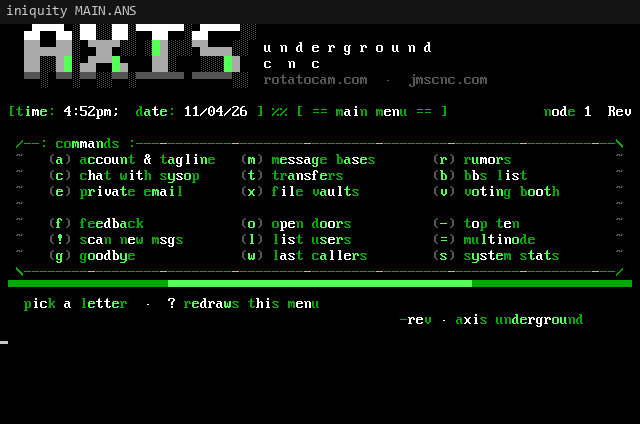
Three looks
Drippy orange Axis, classic Oblivion/2, or green and grey Iniquity.
One tap on the board flips every node. Drop in your own MATRIX.ANS and MAIN.ANS with pipe colours, MCI codes and O/2 pulldown marks.
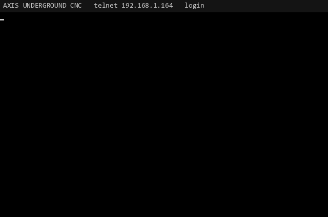
connecting... (any key skips)
── more ── the full log in FEATURES.md
Real captures from the live boards. Hover or tap a card for more; every card opens its page in the docs.

Drippy orange Axis, classic Oblivion/2, or green and grey Iniquity.
One tap on the board flips every node. Drop in your own MATRIX.ANS and MAIN.ANS with pipe colours, MCI codes and O/2 pulldown marks.
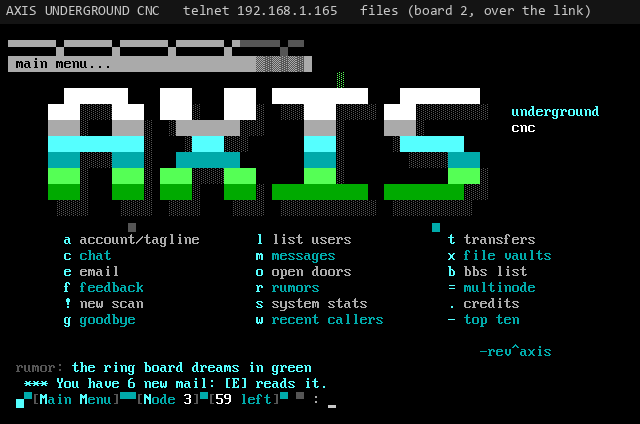
FILES.BBS areas on a microSD card.
Archive listings for ZIP, RAR, ARJ, TAR and GZIP, a search across every area, new files since your last call, and security levels per area.
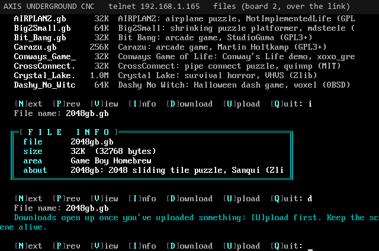
ZMODEM, XMODEM and XMODEM-1K, both ways.
Around 247 KB/s over WiFi. ZIP uploads are CRC-tested and rezipped with the board's NFO. Downloads are earned, with an optional ratio.
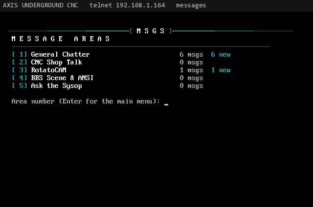
Message areas, quoting, taglines, private mail.
New counts per area, quoted replies under the writer's initials, a new message scan across every area, and a "you have new mail" notice at login.
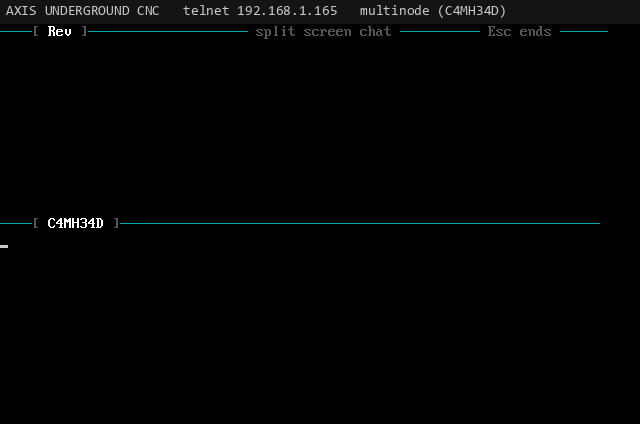
Callers talk to each other, keystroke by keystroke.
Teleconference across every node, node messages, broadcasts, do-not-disturb, and Oblivion/2 style split-screen chat.
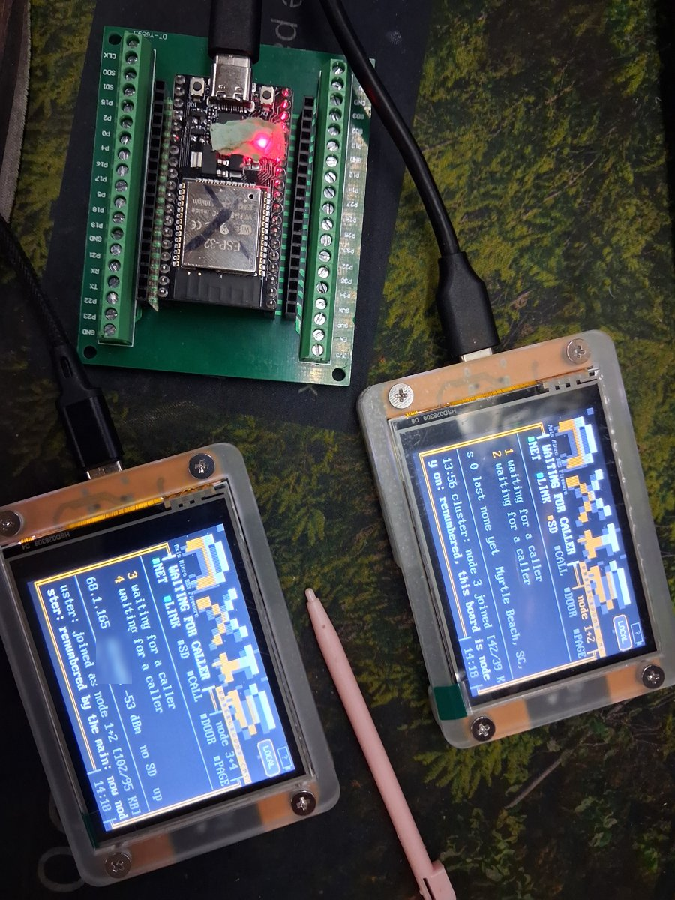
Our family: 3 boards, 7 nodes, one BBS.
More boards on your LAN become extra nodes of one BBS with shared users, files and messages. One address for callers, and failover if the main drops. SD cards in several boards pool into one library with mirrored areas. Work in progress: an SD disc changer where every card is a hot-swappable disc, Night Owl style.
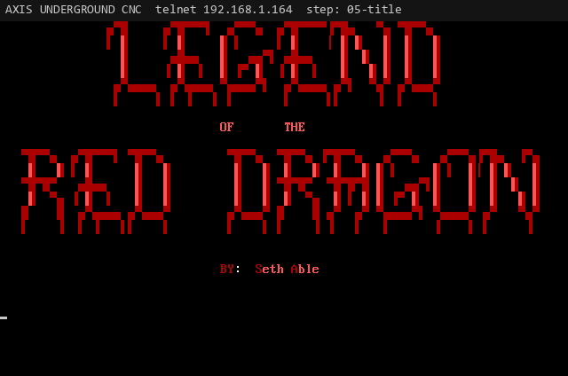
LORD 4.07 on an 8086 emulator, on the board.
A high-level DOS, a BIOS and a FOSSIL driver run the unmodified LORD and BBS Black Jack with DOOR.SYS, as multinode doors.
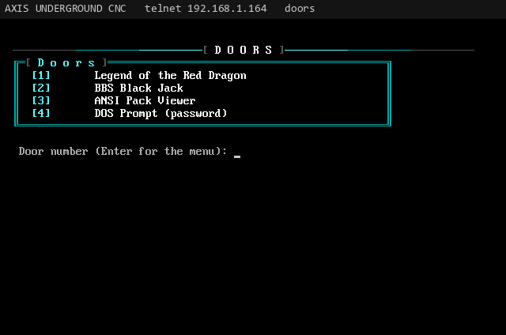
Artpacks straight out of their ZIPs.
A built-in door that pages through classic artpacks and plays ANSI movies at 2400 to 57600 baud. The test board carries 150 scene packs (ACiD, iCE, Fire, CiA, Mistigris, Blocktronics and more) plus three AXIS packs.
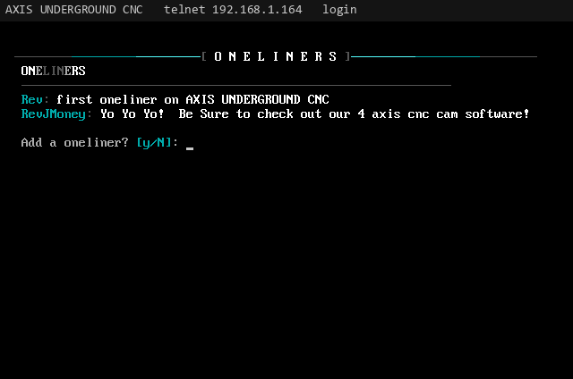
Oneliners, rumors, voting, top ten.
Plus a BBS list, last callers and a bulletin screen. Rumors are anonymous, like the old days.
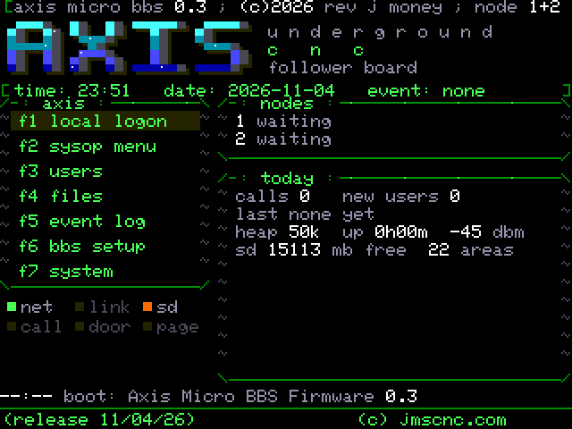
An Iniquity-style board, a sysop menu inside the BBS.
The activity screen shows every node in the cluster. f2 opens a layered sysop menu, the same one you get online with *: users, file areas and files, message bases and posts, every setting, a menu editor. Plus a PC/phone control panel with a live wall of every node's screen.
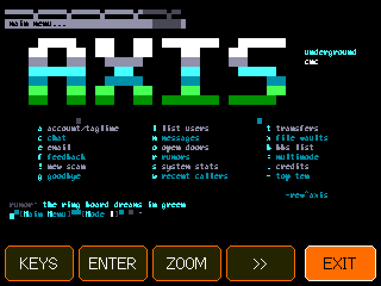
Log in on the 2.8 inch screen itself.
All 80 columns drawn crisp, or ZOOM for 40 big columns that follow the cursor, with a touch keyboard.
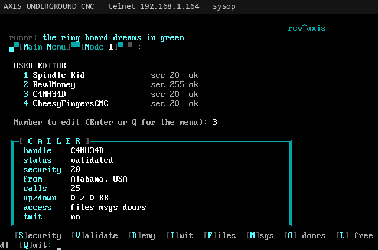
An underground new user application, validated by you.
Security levels, per-area access, permissions, call time limits, a twit flag, and a user editor over telnet.
── more ── every feature, in the docs
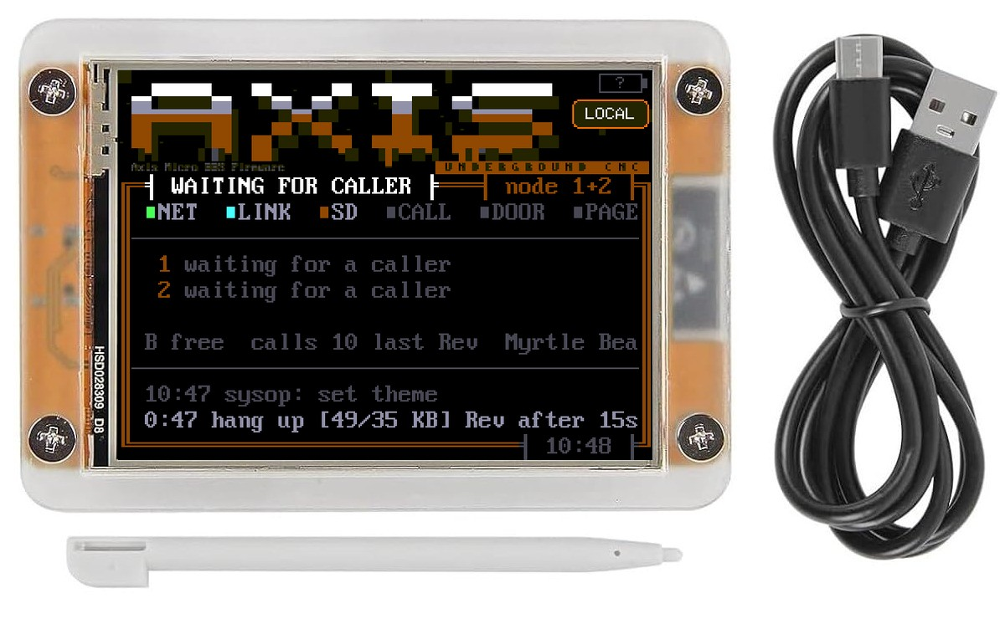
The 2.8 inch ESP32 touchscreen board in a clear acrylic case with the firmware installed and tested, a touch stylus and a USB cable. You supply USB power and 2.4 GHz WiFi. microSD card not included: add your own (FAT32) to turn on the file areas.
Buy on jmscnc.comGPL-3.0-or-later. Grab a CYD, install PlatformIO, and flash it in one command. The docs walk you through it.